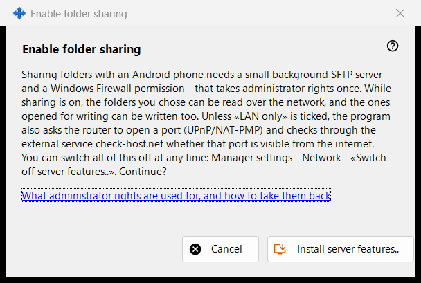
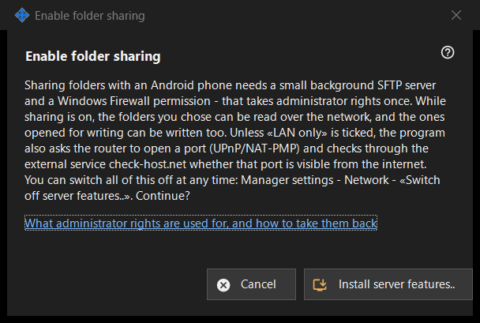

Enable folder sharing
What this is for
Asks permission to install the server side of sharing: a small background SFTP server and one Windows Firewall exception. It opens from the 'Enable server features..' button of the main window and from the wizards, and needs administrator rights once.


In this order
- Read the explanation.
- Press 'Install server features..'.
- Confirm the Windows administrator prompt.
- Wait for the result line; on success the window reports that folder sharing is enabled.
- Press 'Cancel' to leave without changes.
The elements
What it does
Sharing folders with an Android phone needs a small background SFTP server and a Windows Firewall permission. While sharing is on, the chosen folders can be read over the network, and those opened for writing can be written too. Unless the local-network-only option is ticked, the program also asks the router to open a port (UPnP/NAT-PMP) and checks the address through an external service.
Outcomes
'Done. Folder sharing is enabled.'; 'Sharing not enabled - administrator rights were not granted.' when the prompt is declined (nothing changes and you can retry); or a firewall failure, which asks to try again and to send the log from Manager settings - Help - 'Export logs for analysis'.
Administrator rights and how to take them back
The link explains what the rights are used for. To undo it, use 'Switch off server features..' in the manager settings: sharing stops, connected phones are disconnected and the firewall permission is removed. The folder list and the password are kept, and everything can be switched on again.
Manager settings · SFTP sharing settings · Exchange server settings